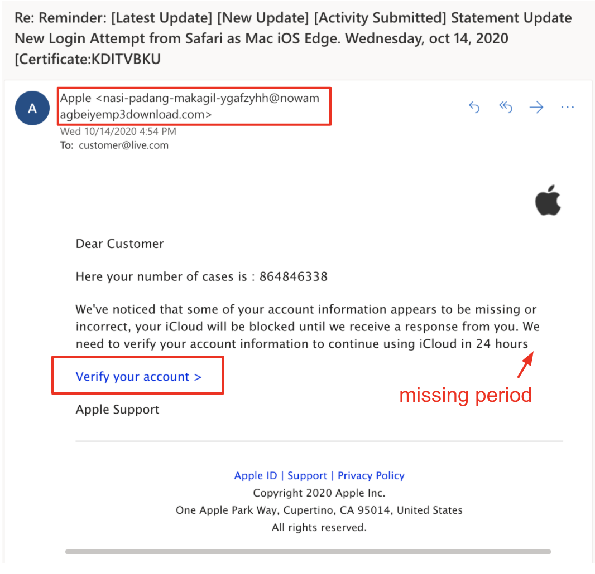

Lesson 3 - How Attacks Work
At the end of this lesson, you will be able to:
- Explain how phishing, social engineering, and malware work
- Identify warning signs of a phishing attempt
- Describe how social engineering exploits human psychology rather than technical vulnerabilities
The Weakest Link
The weakest link in any computer system is usually not the software — it's the person using it. Most successful cyberattacks don't involve some genius hacker in a dark room breaking through firewalls with a flurry of keystrokes (sorry, Hollywood). They involve tricking someone into clicking something they shouldn't, opening a file they shouldn't, or handing over information they shouldn't.
This is actually kind of humbling when you think about it. Companies spend millions of dollars on firewalls, encryption, intrusion detection systems — all the sophisticated technical defenses you can imagine — and the most common way attackers get in is by sending someone a convincing email. The technology isn't the vulnerability. We are.
In this lesson, we're going to look at the most common types of attacks and how they work. Not because we want to teach you to hack (please don't), but because understanding how these attacks operate is the single best way to protect yourself from them.
Social Engineering: Hacking Humans
Social engineering is the umbrella term for any attack that works by manipulating people rather than exploiting software. Instead of finding a bug in a program, the attacker finds a bug in human psychology — our tendency to trust, to comply with authority, to act quickly when we feel urgency, to help when someone asks.
There are several flavors of social engineering, and they're all built on the same basic insight: it's often easier to trick a person than to trick a computer.
Pretexting is when an attacker invents a scenario — a "pretext" — to gain your trust. Maybe they call you pretending to be from your bank's fraud department. Maybe they email you pretending to be IT support and ask you to "verify" your password. The story is fake, but it's designed to sound plausible enough that you don't question it. The key ingredient is that they're impersonating someone you'd have reason to trust.
Baiting exploits curiosity. The classic example: an attacker leaves a USB drive labeled "Employee Salary Data" in a company parking lot. Someone picks it up, plugs it into their work computer to see what's on it — and that drive installs malware. It works because we're naturally curious. (If you find a random USB drive somewhere, please do not plug it into your computer. Just don't.)
Tailgating (or "piggybacking") is a physical attack: following someone through a secure door by walking in right behind them. You've probably held a door open for someone at a building with keycard access without really thinking about it. That's the instinct tailgating exploits — basic politeness.
All of these attacks share a common thread: they don't require any technical sophistication. They require an understanding of how people behave. And that's what makes them so effective — and so hard to defend against with technology alone.
Phishing
Phishing is the most common social engineering attack, and it's the one you're most likely to encounter in your own life. You've almost certainly seen phishing emails before, even if you didn't know what they were called.
A phishing attack is pretty straightforward: the attacker sends you a message (usually an email, but sometimes a text or a social media message) that's designed to look like it's from a legitimate source — your bank, your school, Apple, Amazon, Netflix, &c. The message tries to get you to do something: click a link, download an attachment, or enter your login credentials on a fake website that looks like the real one.
Here's an example of what a phishing email might look like:

So how do you spot one? There are some reliable red flags:
- Urgency: "Your account will be suspended in 24 hours!" "Immediate action required!" Phishing emails almost always try to make you panic so you'll act before you think.
- Generic greetings: "Dear Customer" or "Dear User" instead of your actual name. A real email from your bank will usually address you by name.
- Suspicious sender address: The display name might say "Apple Support," but if you look at the actual email address, it's something like
support@apple-security-alert-42.com. Always check the actual address, not just the name. - Suspicious links: Hover over any link before you click it (don't click it!) and check where it actually goes. If an email claims to be from Amazon but the link points to
amaz0n-secure-login.sketchy-domain.com, that's a phishing attempt. - Typos and odd formatting: Legitimate companies have editors and design teams. If an email from a major corporation has obvious spelling errors or looks like it was formatted by someone in a hurry, be suspicious.
Spear phishing is a more targeted version. Instead of blasting out millions of generic emails, a spear phishing attack is tailored to a specific person. The attacker might research you on social media, find out who your boss is, and then send you an email that appears to come from your boss asking you to wire money or share sensitive information. Because it's personalized, spear phishing is much harder to detect — and much more dangerous.
Malware
If social engineering is about tricking people, malware is about exploiting machines — though in practice, the two often work together. (A phishing email might trick you into downloading malware, for instance.) Malware is just a catchall term for software that's designed to do something harmful to your computer or your data.
There are several types, and they're worth knowing by name:
Viruses are programs that attach themselves to legitimate files and spread when those files are shared — they're the malware equivalent of a biological virus, replicating as they go. Trojans disguise themselves as legitimate software (the name comes from the Trojan Horse — it looks like a gift, but there's something nasty hiding inside). Spyware secretly monitors what you do on your computer and sends that information back to the attacker. Keyloggers are a specific type of spyware that records every keystroke you make — which means they can capture your passwords, credit card numbers, and anything else you type.
You might be wondering about ransomware — the type of malware that locks you out of your own files and demands payment to get them back. That's gotten big enough and scary enough that it gets its own lesson (next one!). For now, just know that ransomware is a type of malware, and it's one of the fastest-growing threats in cybersecurity.
Important: Malware doesn't just come from sketchy emails. It can hide in free software downloads, pirated media, fake browser extensions, and even ads on otherwise legitimate websites (a technique called "malvertising"). The best defense is a combination of up-to-date antivirus software, a healthy skepticism about what you download and install, and keeping your operating system and apps updated — those updates often patch security vulnerabilities that malware exploits.
Reflection
Think about it: Have you or someone you know ever fallen for a phishing attempt or encountered malware? What happened? What were the warning signs in hindsight? If you haven't had a personal experience, think about a time you received a suspicious email or message — what tipped you off that something wasn't right?